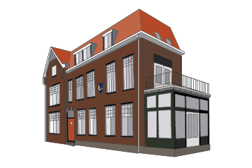

De geschiedenis van het Nayadehuis.
Een huis vol herinneringen, tradities en verhalen. Ontdek hoe het Nayadehuis uitgroeide tot de plek die het vandaag is.
Hoe het allemaal begon
De geschiedenis van het Nayadehuis begint bij het ontstaan van E.S.W.Z.V. Nayade. Vanuit het Eindhovense Studenten Corps ontwikkelde zich een eigen studentenvereniging voor zwem- en waterpololiefhebbers.
Al sinds 1971 is de Nassaustraat 3 de thuisbasis van het Nayadehuis. Een plek waar studenten samen wonen, sporten en herinneringen maken.

Een huis vol geschiedenis
Door de jaren heen heeft het Nayadehuis talloze bewoners, activiteiten en bijzondere momenten gekend.
De vereniging vindt haar eigen plek binnen het Eindhovense studentenleven.
Het Nayadehuis vestigt zich aan de Nassaustraat in Eindhoven.
Een studentenhuis waar gezelligheid, zwemmen, waterpolo en tradities nog altijd samenkomen.